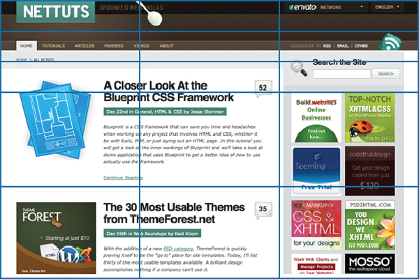

Good judgement is the result of experience ...
Experience is the result of bad judgement.
Fred Brooks,
The Mythical Man-Month: Essays on Software Engineering
Prior to CSS (Cascading Style Sheets), nearly all of the presentational attributes of HTML documents were contained within the HTML markup.
All font, colors, font colors, background styles, element alignments, borders and sizes had to be explicitly described, repeatedly, within the HTML.
It was a MESS!
A REALLY BIG MESS!
<P LANG="en-US" CLASS="western" ALIGN=LEFT><FONT FACE="Times New Roman, serif"><FONT SIZE=2>Blog</FONT><FONT SIZE=2> </FONT><FONT SIZE=2>:</FONT><FONT SIZE=2> </FONT><FONT COLOR="#000080"><U><A HREF="http://www.FalsePositives.com/"><FONT SIZE=2>http://www.FalsePositives.com</FONT></A></U></FONT></FONT></P> <P LANG="en-US" CLASS="western"><FONT COLOR="#000080"><FONT COLOR="#000000"><FONT SIZE=2><SPAN STYLE="text-decoration: none">LinkedIn</SPAN></FONT></FONT></FONT><FONT COLOR="#000080"><U><FONT FACE="Times New Roman, serif"><FONT SIZE=2> </FONT></FONT></U></FONT><FONT COLOR="#000080"><U><FONT FACE="Times New Roman, serif"><FONT SIZE=2>:</FONT></FONT></U></FONT><FONT COLOR="#000080"><U><FONT FACE="Times New Roman, serif"><FONT SIZE=2> </FONT></FONT></U></FONT><FONT COLOR="#000080"><U><FONT FACE="Times New Roman, serif"><FONT SIZE=2>http://www.linkedin.com/in/ianairving</FONT></FONT></U></FONT></P> <P LANG="en-US" CLASS="western" ALIGN=LEFT><FONT FACE="Times New Roman, serif"><FONT SIZE=2><FONT COLOR="#000080"><FONT COLOR="#000000"><SPAN STYLE="text-decoration: none">GitHub:</SPAN></FONT></FONT><FONT COLOR="#000080"><U> </U></FONT><FONT COLOR="#000080"><U><A HREF="http://github.com/iirving">http://github.com/iirving</A></U></FONT></FONT></FONT></P> <P LANG="en-US" CLASS="western" ALIGN=LEFT><BR>
By 1999 I was moving all of that out of the HTML and into embedded CSS or in a linked CSS files
so the markup no longer had a thousand references to FONT and COLOR.
which was a big improvement, more maintainable, smaller, easier to debug.
But we still built the static layouts with html Tables (old)
<table width="960px" border="1">
<tr>
<td colspan=3>Header</td>
</tr>
<tr>
<td colspan=3>Top Nav</td>
</tr>
<tr>
<td width="100px">Secondary Nav</td>
<td>Content</td>
<td>Side bar</td>
</tr>
<tr><td colspan=3>Footer</td></tr>
</table>
(I felt dirty writing that)
And we used table layout in lining up FORM elements with their labels. (Inside the content cell of another table!) (old2)
<td>Content
<table>
<tbody><tr>
<td> </td>
<td>Name: </td>
<td><input type="text"></td>
</tr><tr>
</tr><tr>
<td> </td>
<td>Company: </td>
<td><input type="text"></td>
</tr><tr>
</tr></tbody>
</table>
</td>
There were a raft of problems of using Tables for layout structure:
there was a solution in hand,
(even if it took many years for us to integrate it into our development practices)
Grids offered a solution for layout that got the structure out of the html markup :
See From Table Hacks to CSS Layout: A Web Designer’s Journey
And they offered a strong Visual Design Language from a years of print layout: Designing With Grid-Based Approach
In fact by building around the Golden Ratio (Phi = 1.61) you can archive an aesthetically pleasing, balanced, layout!

Even a basic application to our old table drive Layout resulted in (css1) cleaner html.
<div id="content" class="article span-14 append-3">
<div class="span-14">Content</div>
<div class="span-14">
<lable class="span-3 append-2" for="fname">Name:</lable>
<span class="span-2"></span>
<input id="fname" class="span-8 alignR" type="text">
</div>
<div class="span-14">
<lable class="span-3 append-2" for="company">Company:</lable>
<span class="span-2"></span>
<input id="company" class="span-8 alignR" type="text">
</div>
</div>
This was a a BIG improvement.
We now had much cleaner HTML markup and all our Layout in the CSS
and that allowed some things that where not possible with table driven layout as demonstrated by the CSS Zen Garden
The other thing that allowed for a rapid embrace of Grid based layouts was the emergence of CSS Frameworks
They allowed for easier, more standards-compliant styling of web pages using best practices
The biggest difference between Frameworks being the size of the grid (920px, 1024px 1140px were commonly used ) and the number of columns (4 or 12 or 16 ). Some are more opinionated then others
and there are even grid generators:
plug in your total width, and number of max number of columns and BINGO!
U Haz Layout
They ALL help you development the layout and style of your sites with a foundation of best practices, quickly.
When the BluePrint http://blueprintcss.org/ framework come out in 2007, I started using it right away
BUT, these were still Static grids!
Now there had been some crazy people as far back as 2001 and 2002 who talked about "elastic design"
Like Dug Falby in A List Apart : Flexible Layouts , and Eric Costello
But they were ignored, because:
So they were largely ignored
Until ...
in 2007, January 9, Steve Jobs introduced the iPhone and everything changed
and suddenly those layouts that worked on a 17" laptop didn't look so hot :(
and then the Android devices,
and the iPad
So how do you developed a web site that "works" on all those layouts without going crazy?
(insert graphic of Ian pulling out the rest of his hair)
Now around this time CSS3 support was showing up in Chrome. Firefox and Safari
and CSS3 included Media Queries (which are an extension of @media rules previously used to create print only CSS)
And this gave us a way out
Look at Media Queries to see want is being done
First Rate HTML5 Responsive Frameworks include
if you don't find what you're looking for there, then see : 15 Responsive CSS Frameworks Worth Considering
For More Reading
One of the trickiest parts to be "responsified" on a website is “The Navigation”
It's also the most important.
for the smaller width screens Navigation is quickly refined to either a drop down or becomes the primary content in the form of a Vertical List or a Flexible Grid
Here's a good guide of Patterns and Tutorials for Responsive Navigation
You need to develop a approach that works for your audience and content.
One approach to build mobile only websites is to show only that content that is of interest to mobile users.
I strongly believe that is wrong.
Users are Users
What you do need is to show only the essential information, or most important options, in the each step and then invite users to take the next step.
When the user completes a step, you reveal the information in the next step, possibly keeping all previous steps visible.
Sometimes you can do this with Accordion Boxes, or just a simple "Next", or an Advanced Option.
Another "Progressive disclosure" pattern is "infinite scrolling" where content is continuously added to the bottom of a list, without an explicit reload or refresh
Fingers are bigger than Mouse Pointers!!
On any Mobile device: Make clickable elements big enough for a fingertip
≈ 44px x 44px are Apple’s guidelines for *minimum* touch target sizes
I use SASS (stands for Syntactically Awesome Stylesheets)
$blue: #3bbfce;
$scotia-red: #cc3333;
$scotia-gold: #e19617;
$margin: 16px;
.content_navigation {
color: $blue; }
.border {
padding: $margin / 2;
margin: $margin / 2;
border: 2px $blue solid; }
@mixin my-style {background: red; color: white; float: left; display: block; }
.box-1 { @include my-style; }
.box-2 { @inculde my-style; font-size: 16px; }
=>
.box-1 { background: red; color: white; float: left; display: block; }
.box-2 { background: red; color: white; float: left; display: block; font-size: 16px; }
.simple { @include border-radius(4px, 4px); }
=>
.simple {-webkit-border-radius: 4px 4px;
-moz-border-radius: 4px / 4px;
-khtml-border-radius: 4px / 4px;
border-radius: 4px / 4px; }
.my-style { background: red; color: white; float: left; display: block; }
.box-1 { @extend my-style; }
.box-2 { @extend my-style; font-size: 16px; }
=>
.box-1 .box-2 { background: red; color: white; float: left; display: block; }
.box-2 {font-size: 16px; }
Even some of the first class modern browsers don't support all the CSS3 features
So do we avoid features that aren't highly supported?
Modernizr to the rescue!
A JavaScript library that detects HTML5 and CSS3 features in the user’s browser. Lets you write conditional JavaScript and CSS to handle when a browser doesn't support a feature.
The next step is to use ployfills for Progressive Enhancement. (also called shims and fallbacks)
A polyfill, or polyfiller, is a piece of code (or plugin) that provides the technology that the browser is not providing natively.
Here a collection of polyfills : HTML5 Cross Browser Polyfills
also known officially as ECMAScript
But it was very hard.
one HUGE problem was how much code you had to write to right code that worked on both IE 6 (which was a big improvement when it came out in 2001 ) and Netscape.
( getElementById method in IE was still broken in IE7)
It was also very hard to debug!! lots the alert("here!"); statements.
so I built web sites that didn't depend on javaScript, or as little as possible.
We really wanted to do javaScript, but it was too hard. :(
but around 2005 The Prototype JavaScript Framework came out.
and I started writing JavaScript again, lots and lots of JS because:
and it got better!
in 2006 a new framework called jQuery:
Used by over 55% of the 10,000 most visited websites, jQuery is the most popular JavaScript library in use today.
Because of its architecture, its easy to create plug-ins to extend its functionality.
Currently there are thousands of jQuery plug-ins available on the web.
jQuery also popularized unobtrusive JavaScript :
Just as CSS allowed us to remove layout from the markup, unobtrusive JS allows you to separation of functionality (the "behavior layer") from a Web page's structure/content and presentation, rather than lots of inline javaScript:
<input Tycope="text" name="date" onchange="validateDate()" />
you do more of :
<input type="text" name="date" id="date" />
window.onload = function() {
document.getElementById('date').onchange = validateDate;
};
Which can now go in a separate, JavaScript, file. Much better!
In 1999, Microsoft released in Internet Explorer 5, which included the XMLHttpRequest (XHR) javascript method
which let you send a request to a web server with http or https and get back data (plain text, html, xml, or json)
The term Ajax was coined on 18 February 2005 by Jesse James Garrett in an article entitled "Ajax: A New Approach to Web Applications", based on techniques used on Google pages, Like Gmail in 2004.
AJAX is an acronym for "Asynchronous JavaScript and XML".
Despite the name, the use of XML is not required, and the requests do not need to be asynchronous.
with Prototype and jQuery it became practical to do browser-independent Ajax queries using $.ajax and associated methods to load and manipulate remote data.
$.ajax({
type: "POST",
url: "example.php",
data: "name=John&location=Boston",
success: function(msg){
alert( "Data Saved: " + msg );
}
});
and so we did!
Now parsing XML data is a pain. parsing XML data in a browser is even worse. (even using XPath in JavaScript)
So..
along came JavaScript Object Notation (actually it's been around since 2001) which is intended as a data serialization format
{
"firstName": "John",
"lastName": "Smith",
"age": 25,
"address": {
"streetAddress": "21 2nd Street",
"city": "New York",
"state": "NY",
"postalCode": "10021"
}
}
which turned out to be really usefully for doing AJAX Web browsers now either have or are working on native JSON encoding/decoding. JSON is promoted as a low-overhead alternative to XML
The fact that it's a native JavaScript object is very handy in the browser too!
so now we do a lot more AJAX!
and generally we call RESTful web services
REpresentational State Transfer (REST)
A RESTful web service (also called a RESTful web API) is a web service implemented using HTTP where :
and as we are being much more completed applications with all those AJAX calls (including AJAX pushes to the server) , the code become increasing "spaghetti" like
and recently, to address that issue, arose ..
JavaScript MVC frameworks organize client side code into
There is a lot of work going on here right now and I will just refer you to:
Journey Through The JavaScript MVC Jungle
and ToDo MVC
The point is that it is now possible to build in a browser application that only a few years again would have required a C++ executable
jQuery Mobile is a touch-optimized web framework being developed by the jQuery team.
It is HTML5-driven configuration for laying out pages with minimal scripting
It has Ajax-powered navigation with animated page transitions that provides ability to clean URLs through pushState.
It has UI widgets that are touch-optimized and platform-agnostic, although very iOs centric
See the Gallery for sites built on jQuery Mobile, and jQuery Mobile Development Tips for more help
HTML5 is the new and ongoing revision of HTML, extending and cleaning up its immediate predecessors HTML 4.01 and XHTML 1.1.
HTML5 = HTML + Browser API's + CSS3 + JavaScript
HTML5 Rocks is a good resource for learning about HTML5
and read the HTML5 Boilerplate documentation!
To see where we are for browser implement of HTML5 : http://html5readiness.com
and http://html5test.com to see how well does your browser support HTML5.
To understand HTML5 compatibility on mobile and tablet browsers : http://mobilehtml5.org
HTML5 + CSS 3
Developing for Chrome, Safari, FireFox, Opera, IE 10
using a responive HTML5 css framework HTML5 Boilerplate
and Modernizer plus ploy fills for Progressive Enhancement of older browser features
for Javascript (ECMAScript)
at minimum Using unobtrusive jQuery + other plugins for affects
if doing something heavily Ajax then using a Javascript MVC
Use your Browser-based development tools
Use VM's to test against IE 6/7/8
Build on OSx, Deploy to Linux, and (only if you must) test on Windows
consuming and emitting RESTful web services and JSON
"Your API is your Application", Fred Wilson VC DemoCamp Toronto 2010
a versioned RESTful API means you can build multi presentation layers with each moving at it own velocity
Doing Distributed Version Control using Git, with offsite source control on GitHub. (they have a locally hosted on a vm Enterprise version)
using a css preprocessor like SASS to speed up development, (variables, constants, functions, mixins, math) to create my CSS.
using a utility that eliminates the need to refresh the browser when you want to see HTML, CSS and JavaScript changes like LiveReload
Developing in a MVC framework in a programming language in : Ruby (Ruby on Rails, Sintra), Python (Django, Pyramid, Zope) , PHP (Cake, Zend), Javascript (Node)
sometime they are doing development on top of the JVM with: JRuby, Jython, Clojure, Scala, Groovy , Grails
the Views may be built in embedded language pages HTML markup : Java (.jsp), Ruby (.erb) , PHP (.php) , c# (.asp)
or they use a Logic less Template (Mustache, Handlebars, Closure Templates )
deploying to the Cloud : a virtual private linux server on Amazon EC2 (or linode and vps.net)
or using a PASS vendor like Heroku or AppFog
with a capistrano deployment script or other automated processes
using MySql or (increasingly) PostGreSQL as a relational db
or a NoSQL ("not only SQL") db like MongoDB; Cassandra (Facebook); Hadoop (Google) for "Big Data" (PetraByte) or "High Performance IO"
another way to get "High Performance IO is to be running SSD drive servers (now on Amazon EC2)
DevOps
controlling all elements of a technology infrastructure making it Repeatable Testable Scalable
i.e. automating Development, Operations and QA in order to reduce risk, release frequent and smaller changes, of a higher quality
a core tool is the use of configuration management software like :
allows consistent environments across development,QA/Staging, production.
See The Chef, the Puppet, and the Sexy IT Admin
think of them as declarative provisioning tools
There are also a whole new set of tools for:
Treating logs as event streams (New Relic, splunk, loggly )
deployment, performance, and application monitoring
See what your application is doing
Catching exceptions and track execution flow
Visualizating of raw log files
If you make it hard for User to use your system, they wouldn't
Don’t use hover states in css or mouse over in JavaScript. They don't work on mobile.
Reduce load time by using CSS3 instead of images for gradients, rounded corners, shadows, etc.
Minify, compress and gzip your CSS and Javascript; Optimize your images
Cache your CSS, JavaScript, and Image assets with long expiry dates.
The performance tips that worked on the web are even more important for mobile
Use an HTML5 doctype to trigger standards mode. (even ie6!!)
Make your site operate offline, At minimum look into creating a cache file for your site.
use the Mobile Meta Tags
feature detection (not browser detection) and Progressive Enhancement for unsupported features.
please do not over use CSS3 @font-face
Serif fonts are typeface with small finishing strokes at the beginning and end of each letter stroke.
Helvetica, Arial, Verdana, Tahoma, Futura, Franklin Gothic, Gill Sans, and Universal
Sans Serifs are typeface with a lack of ornamentation.
Times New Roman, Georgia, Book Antiqua, Garamond, Century Schoolbook, and Bookman (Common Slab Serifs: Courier and Rockwell)
avoid using Comic Sans, Curlz, Papyrus, and Times New Roman.
you will be laughed at
A very common and effective technique is to pair a serif and a sans serif typeface, using one for headers and the other for body text.
Most often, the serif is used for body text and the sans serif for headers, but this can be reversed.
10 useful typography tips to improve your website readability
/
#